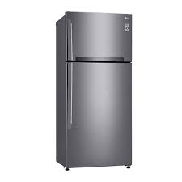
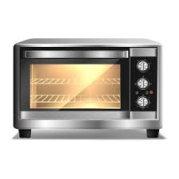
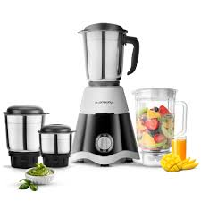
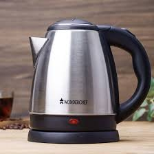
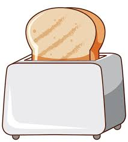

Home appliances are electrical or mechanical devices used in households to make daily tasks easier and more efficient. They help people in cooking, cleaning, washing, cooling, heating, and entertainment. Common home appliances include refrigerators, microwave ovens, washing machines, air conditioners, televisions, and mixer grinders. These appliances save time, reduce manual effort, and improve comfort in daily life. In modern homes, home appliances have become essential because they increase convenience and help maintain a better lifestyle.
A refrigerator is a home appliance used to keep food and drinks fresh for a longer time. It works by maintaining a low temperature inside, which slows down the growth of bacteria. It is used to store vegetables, fruits, milk, water, and cooked food safely.

A microwave oven is used for heating and cooking food quickly. It uses microwave radiation to heat food evenly in a short time. It is commonly used to reheat leftovers, cook simple meals, and defrost frozen items.

A mixer grinder is used for grinding, mixing, and blending food ingredients. It is helpful in preparing chutneys, spices, juices, and batter. It saves time and reduces manual effort in the kitchen.

An electric kettle is used to boil water quickly. It is commonly used for making tea, coffee, and instant noodles. It works using an electric heating element and automatically switches off when the water reaches boiling point.

A toaster is used to toast bread slices. It makes the bread crispy and brown by applying heat. Toasted bread is commonly eaten for breakfast with butter or jam.
